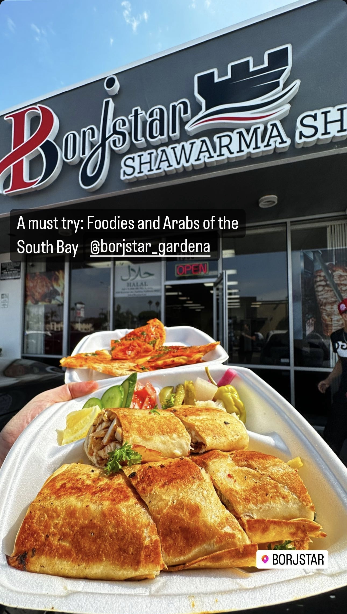

📍 Gardena, CA
•
🍽️ Middle Eastern
•
📅 Dec 2024
Borjstar Shawarma: The Hidden Gem in Gardena That's Worth the Drive
Why this unassuming spot in Gardena has become my go-to for authentic Middle Eastern flavors. Discover the community-driven experience that makes exploring local spots so rewarding.
Read More →